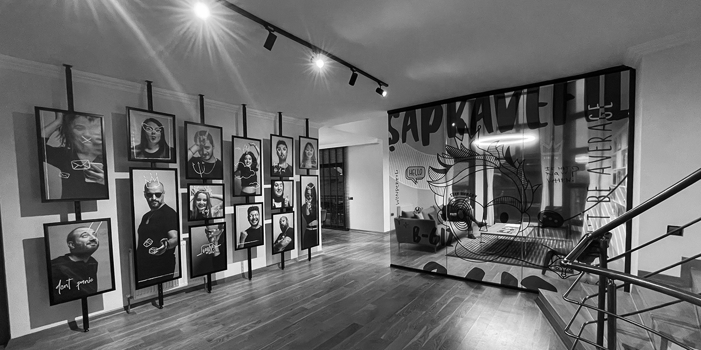

Şapka ve Fil Reklam Ajansı, marka ve tasarım kültürünü yaşam haline getirmiş bir ekibe sahiptir. Şapka ve Fil ekibi ise;tüm çalışmalarında nitelikli işçilik için temel markalama ve tasarım değerlerini hayata geçirir. Modern tasarım dinamiklerini, müşteri gerçekleriyle birleştirir ve daha çok kazandırmak için kusursuz karışımı oluşturur.
Şapka ve Fil Reklam Ajansı yalnızca “iyi fikre” inanır. Çünkü güçlü fikirler, kullandığınız araç hangisi olursa olsun sizi istediğiniz yere götürür. Tanıtım ihtiyacınızın ne olduğuna baklmaksızın burada sizi iyi fikirler karşılar.
| Geleneksel Medya | TV Reklamı, Sinema Reklamı, Açık Hava (Billboard, raket, kuleboard vb.), Katalog, Faaliyet Raporu, Broşür, Basın İlanı, Süreli Yayın vb. |
| Dijital Medya | Influencer Marketing, Google Servisleri Yönetimi (Adwords, Google Display Network vb.), SEO, Viral Pazarlama, Sosyal Medya Takibi ve Yönetimi, Youtube Kanal Yönetimi, Dijital Kampanya |
| Web / Yazılım | Web (İnternet) Sitesi, HTML Tabanlı Oyunlar, Mikrosite, E-Ticaret Çözümleri, İş Takip Programları, Kurumsal Yazılım, Mobil Uygulama vb. |
| Etkinlik Tasarımı | Bayi Toplantısı, Fuar Stant Konsept Tasarımı, Sunum Konsept Tasarımı vb. |
| Prodüksiyon | Reklam Filmi, Tanıtım Filmi, Ürün Uygulama Filmi, Etkinlik Konsept Filmi vb. |
| 3D Modelleme | 3D Modelleme, 3D Mimari Görselleştirme, 3D Endüstriyel Görselleştirme, 3D Animasyon Film vb. |
| Kurumsal Kimlik | İsim Çalışması, Logo-Amblem Tasarımı, Kurumsal Kimlik Kılavuzu, Kurumsal Maskot/Karakter Tasarımı, Slogan vb. |
| Ambalaj Tasarım | Kutu Tasarımı, Paket Tasarımı, Poşet Tasarımı, Etiket Tasarımı vb. |
Şapka ve Fil; dijital ya da konvansiyonel ayırt etmeksizin, mecra ya da medya farkı gözetmeden iyi fikrin yer alabileceği tüm alanları sahipleniyor. Markaları için dijital oyun da tasarlıyor, HTML tabanlı 3D proje de geliştiriyor. Sosyal medya için kampanya da oluşturuyor, bayi toplantıları ya da fuarlarına konsept çözümler de üretiyor. Marka problemi neredeyse Şapka ve Fil ona dönük yaratıcı çözümler getirmeye devam ediyor. Kısaca, burada patron iyi fikir oluyor.